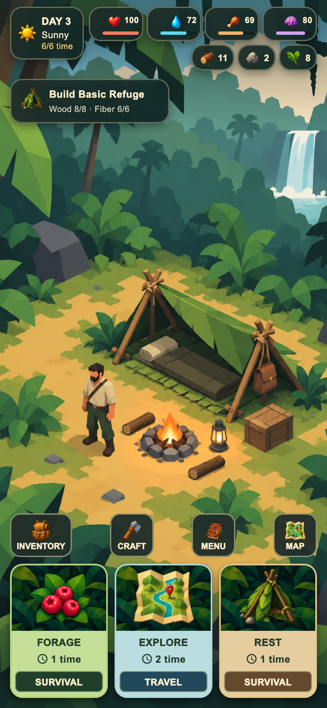
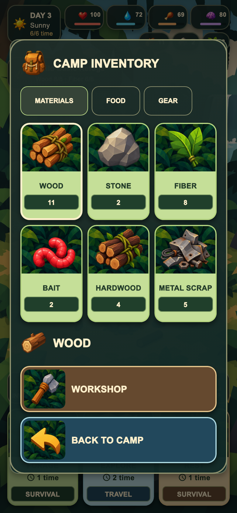
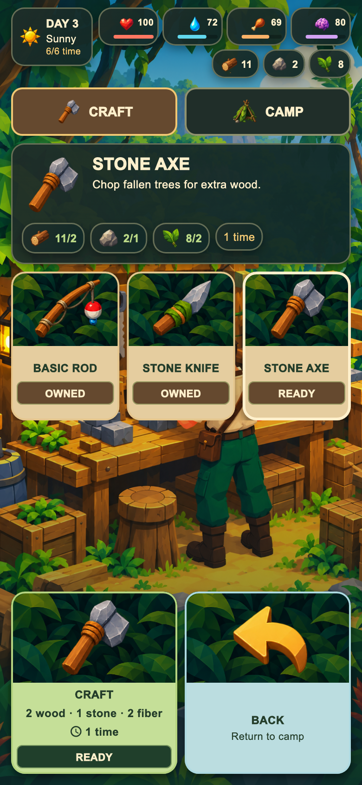
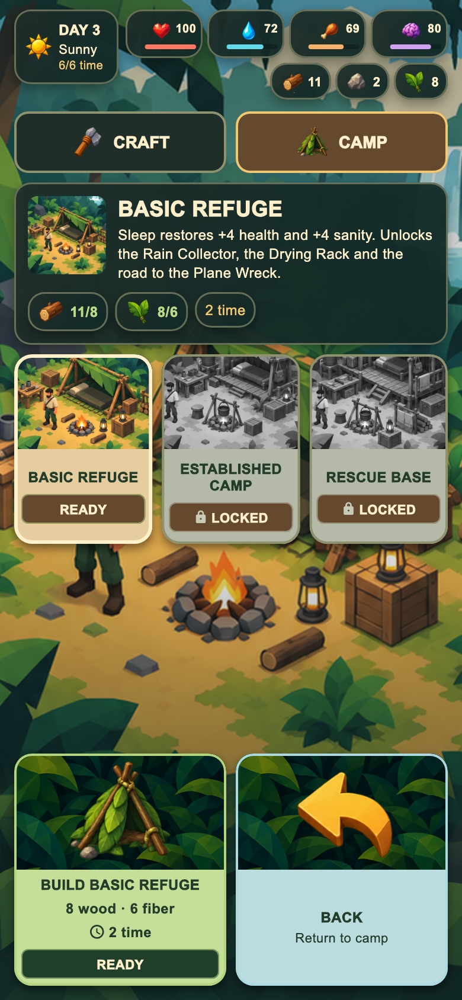
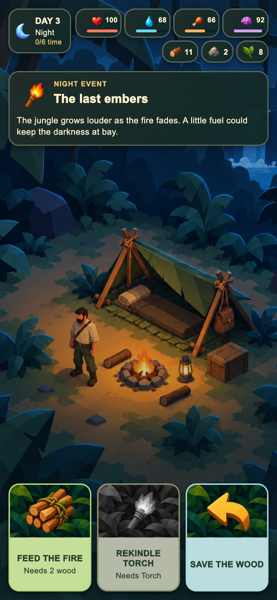
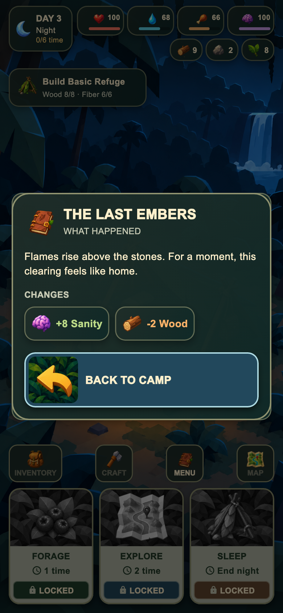
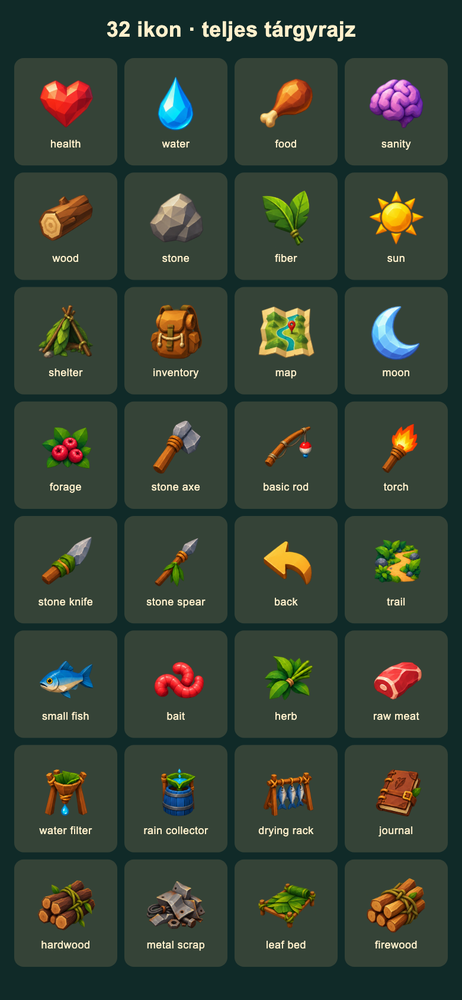

01
A felső fél képi felület, sötétített lombos háttérrel; a tárgyrajz teljes egészében látszik. Az alsó fél a rövid akció és a szükséges információ. Egyetlen világos külső keret, belső szegélyek nélkül.
Tényleges Flutter-képernyőképek, 390 × 844 mobilméreten, 2× PNG-felbontással. A széles nézet 520 × 844. Az automatizált tesztkör még hátravan.









